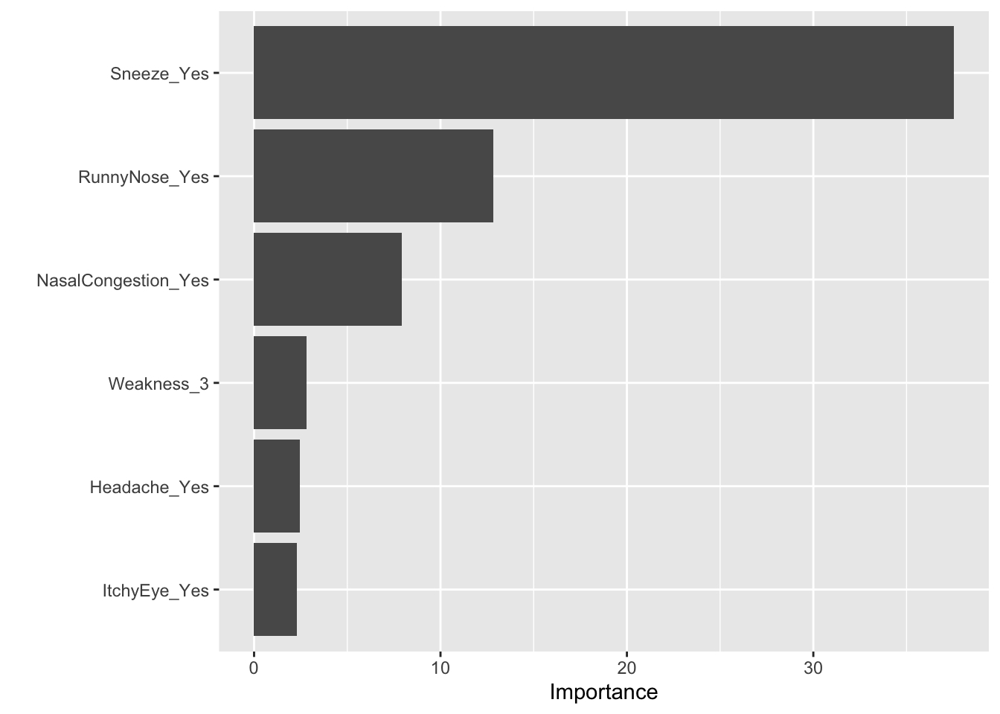

Statistical Analysis Example 1
Ryan Grunert
11/1/2021
The complete analysis can be found at https://github.com/RKAG12/RyanGrunert-MADA-analysis3.
Loading required packages
library(tidyverse)
library(tidymodels)## Registered S3 method overwritten by 'tune':
## method from
## required_pkgs.model_spec parsnip## ── Attaching packages ────────────────────────────────────── tidymodels 0.1.4 ──## ✓ dials 0.0.10 ✓ rsample 0.1.0
## ✓ infer 1.0.0 ✓ tune 0.1.6
## ✓ modeldata 0.1.1 ✓ workflows 0.2.3
## ✓ parsnip 0.1.7 ✓ workflowsets 0.1.0
## ✓ recipes 0.1.17 ✓ yardstick 0.0.8## ── Conflicts ───────────────────────────────────────── tidymodels_conflicts() ──
## x scales::discard() masks purrr::discard()
## x dplyr::filter() masks stats::filter()
## x recipes::fixed() masks stringr::fixed()
## x dplyr::lag() masks stats::lag()
## x yardstick::spec() masks readr::spec()
## x recipes::step() masks stats::step()
## • Learn how to get started at https://www.tidymodels.org/start/library(rsample)
library(rpart)##
## Attaching package: 'rpart'## The following object is masked from 'package:dials':
##
## prunelibrary(rpart.plot)
library(glmnet)## Loading required package: Matrix##
## Attaching package: 'Matrix'## The following objects are masked from 'package:tidyr':
##
## expand, pack, unpack## Loaded glmnet 4.1-2library(ranger)
library(vip)##
## Attaching package: 'vip'## The following object is masked from 'package:utils':
##
## viLoading the Data and Setting the Seed
This loads the processed data from the “analysisscriptWeek3.R” file for this analysis.
data_location2 <- here::here("files","PrePanalysisdata.rds")
df2 <- readRDS(data_location2)
set.seed(123)Data and Null Model Setup
The below code splits the data into 70% training and 30% testing using BodyTemp as stratification.
###########Data Splitting################
#Putting 7/10 of the data into a training set
data_split <- initial_split(df2, prop = 7/10, strata = BodyTemp)
#Creating data frames for the two sets
train_data <- training(data_split)
test_data <- testing(data_split)This chunk is creating the CV folds for our data, there will be 5. This also creates the recipe for the model fitting, which is BodyTemp against all the predictors on the training data, and codes the predictors as dummy variables.
folds <- vfold_cv(train_data, v = 5, repeats = 5, strata = BodyTemp)
recBT <- recipe(BodyTemp ~ ., data = train_data) %>% step_dummy(all_nominal_predictors())Null Model Performance
The following code sets up Null models for both the training data and testing data.
#sets the basic linear model for training data
lm_mod <- linear_reg() %>% set_engine("lm") %>% set_mode("regression")
#recipe for the null model on training data
nullrecTrain <- recipe(BodyTemp ~ 1, data = train_data)
#workflow for null model on training data
nullmodel <- workflow() %>% add_model(lm_mod) %>% add_recipe(nullrecTrain)
#fits the model to the training data
FitNullTrainMod <- fit_resamples(nullmodel, resamples = folds)## ! Fold1, Repeat1: internal: A correlation computation is required, but `estimate` is const...## ! Fold2, Repeat1: internal: A correlation computation is required, but `estimate` is const...## ! Fold3, Repeat1: internal: A correlation computation is required, but `estimate` is const...## ! Fold4, Repeat1: internal: A correlation computation is required, but `estimate` is const...## ! Fold5, Repeat1: internal: A correlation computation is required, but `estimate` is const...## ! Fold1, Repeat2: internal: A correlation computation is required, but `estimate` is const...## ! Fold2, Repeat2: internal: A correlation computation is required, but `estimate` is const...## ! Fold3, Repeat2: internal: A correlation computation is required, but `estimate` is const...## ! Fold4, Repeat2: internal: A correlation computation is required, but `estimate` is const...## ! Fold5, Repeat2: internal: A correlation computation is required, but `estimate` is const...## ! Fold1, Repeat3: internal: A correlation computation is required, but `estimate` is const...## ! Fold2, Repeat3: internal: A correlation computation is required, but `estimate` is const...## ! Fold3, Repeat3: internal: A correlation computation is required, but `estimate` is const...## ! Fold4, Repeat3: internal: A correlation computation is required, but `estimate` is const...## ! Fold5, Repeat3: internal: A correlation computation is required, but `estimate` is const...## ! Fold1, Repeat4: internal: A correlation computation is required, but `estimate` is const...## ! Fold2, Repeat4: internal: A correlation computation is required, but `estimate` is const...## ! Fold3, Repeat4: internal: A correlation computation is required, but `estimate` is const...## ! Fold4, Repeat4: internal: A correlation computation is required, but `estimate` is const...## ! Fold5, Repeat4: internal: A correlation computation is required, but `estimate` is const...## ! Fold1, Repeat5: internal: A correlation computation is required, but `estimate` is const...## ! Fold2, Repeat5: internal: A correlation computation is required, but `estimate` is const...## ! Fold3, Repeat5: internal: A correlation computation is required, but `estimate` is const...## ! Fold4, Repeat5: internal: A correlation computation is required, but `estimate` is const...## ! Fold5, Repeat5: internal: A correlation computation is required, but `estimate` is const...NullTrainMetrics <- collect_metrics(FitNullTrainMod)
#recipe for the null model on testing data
nullrecTest <- recipe(BodyTemp ~ 1, data = test_data)
#workflow for null model on testing data
nullmodelTest <- workflow() %>% add_model(lm_mod) %>% add_recipe(nullrecTest)
#Fits the model to the testing data
FitNullTestMod <- fit_resamples(nullmodel, resamples = folds)## ! Fold1, Repeat1: internal: A correlation computation is required, but `estimate` is const...## ! Fold2, Repeat1: internal: A correlation computation is required, but `estimate` is const...## ! Fold3, Repeat1: internal: A correlation computation is required, but `estimate` is const...## ! Fold4, Repeat1: internal: A correlation computation is required, but `estimate` is const...## ! Fold5, Repeat1: internal: A correlation computation is required, but `estimate` is const...## ! Fold1, Repeat2: internal: A correlation computation is required, but `estimate` is const...## ! Fold2, Repeat2: internal: A correlation computation is required, but `estimate` is const...## ! Fold3, Repeat2: internal: A correlation computation is required, but `estimate` is const...## ! Fold4, Repeat2: internal: A correlation computation is required, but `estimate` is const...## ! Fold5, Repeat2: internal: A correlation computation is required, but `estimate` is const...## ! Fold1, Repeat3: internal: A correlation computation is required, but `estimate` is const...## ! Fold2, Repeat3: internal: A correlation computation is required, but `estimate` is const...## ! Fold3, Repeat3: internal: A correlation computation is required, but `estimate` is const...## ! Fold4, Repeat3: internal: A correlation computation is required, but `estimate` is const...## ! Fold5, Repeat3: internal: A correlation computation is required, but `estimate` is const...## ! Fold1, Repeat4: internal: A correlation computation is required, but `estimate` is const...## ! Fold2, Repeat4: internal: A correlation computation is required, but `estimate` is const...## ! Fold3, Repeat4: internal: A correlation computation is required, but `estimate` is const...## ! Fold4, Repeat4: internal: A correlation computation is required, but `estimate` is const...## ! Fold5, Repeat4: internal: A correlation computation is required, but `estimate` is const...## ! Fold1, Repeat5: internal: A correlation computation is required, but `estimate` is const...## ! Fold2, Repeat5: internal: A correlation computation is required, but `estimate` is const...## ! Fold3, Repeat5: internal: A correlation computation is required, but `estimate` is const...## ! Fold4, Repeat5: internal: A correlation computation is required, but `estimate` is const...## ! Fold5, Repeat5: internal: A correlation computation is required, but `estimate` is const...NullTestMetrics <- collect_metrics(FitNullTestMod)
NullTrainMetrics## # A tibble: 2 × 6
## .metric .estimator mean n std_err .config
## <chr> <chr> <dbl> <int> <dbl> <chr>
## 1 rmse standard 1.21 25 0.0177 Preprocessor1_Model1
## 2 rsq standard NaN 0 NA Preprocessor1_Model1NullTestMetrics## # A tibble: 2 × 6
## .metric .estimator mean n std_err .config
## <chr> <chr> <dbl> <int> <dbl> <chr>
## 1 rmse standard 1.21 25 0.0177 Preprocessor1_Model1
## 2 rsq standard NaN 0 NA Preprocessor1_Model1For both of the null models, the rmse is around 1.21 and there is no r squared because there is no variance in the model.
Model Tuning and Fitting
The steps (block of code) you should have here are 1) model specification, 2) workflow definition, 3) tune grid specification and 4) tuning using cross-validation and the tune_grid function.
Decision Tree Model
This is creating a decision tree model and specifying the tuning grid for the hyperparameters. The grid gives us 25 possible different possible tuning combinations.
#Model Specification
tune_spec <-
decision_tree(
cost_complexity = tune(),
tree_depth = tune()
) %>%
set_engine("rpart") %>%
set_mode("regression")
tune_spec## Decision Tree Model Specification (regression)
##
## Main Arguments:
## cost_complexity = tune()
## tree_depth = tune()
##
## Computational engine: rpart#Tuning grid specification
tree_grid <- grid_regular(cost_complexity(),
tree_depth(),
levels = 5)
tree_grid## # A tibble: 25 × 2
## cost_complexity tree_depth
## <dbl> <int>
## 1 0.0000000001 1
## 2 0.0000000178 1
## 3 0.00000316 1
## 4 0.000562 1
## 5 0.1 1
## 6 0.0000000001 4
## 7 0.0000000178 4
## 8 0.00000316 4
## 9 0.000562 4
## 10 0.1 4
## # … with 15 more rows#Workflow Definition
tree_wf <- workflow() %>%
add_model(tune_spec) %>%
add_recipe(recBT)#Tuning the model
tree_res <-
tree_wf %>%
tune_grid(
resamples = folds,
grid = tree_grid
)## ! Fold1, Repeat1: internal: A correlation computation is required, but `estimate` is const...## ! Fold2, Repeat1: internal: A correlation computation is required, but `estimate` is const...## ! Fold3, Repeat1: internal: A correlation computation is required, but `estimate` is const...## ! Fold4, Repeat1: internal: A correlation computation is required, but `estimate` is const...## ! Fold5, Repeat1: internal: A correlation computation is required, but `estimate` is const...## ! Fold1, Repeat2: internal: A correlation computation is required, but `estimate` is const...## ! Fold2, Repeat2: internal: A correlation computation is required, but `estimate` is const...## ! Fold3, Repeat2: internal: A correlation computation is required, but `estimate` is const...## ! Fold4, Repeat2: internal: A correlation computation is required, but `estimate` is const...## ! Fold5, Repeat2: internal: A correlation computation is required, but `estimate` is const...## ! Fold1, Repeat3: internal: A correlation computation is required, but `estimate` is const...## ! Fold2, Repeat3: internal: A correlation computation is required, but `estimate` is const...## ! Fold3, Repeat3: internal: A correlation computation is required, but `estimate` is const...## ! Fold4, Repeat3: internal: A correlation computation is required, but `estimate` is const...## ! Fold5, Repeat3: internal: A correlation computation is required, but `estimate` is const...## ! Fold1, Repeat4: internal: A correlation computation is required, but `estimate` is const...## ! Fold2, Repeat4: internal: A correlation computation is required, but `estimate` is const...## ! Fold3, Repeat4: internal: A correlation computation is required, but `estimate` is const...## ! Fold4, Repeat4: internal: A correlation computation is required, but `estimate` is const...## ! Fold5, Repeat4: internal: A correlation computation is required, but `estimate` is const...## ! Fold1, Repeat5: internal: A correlation computation is required, but `estimate` is const...## ! Fold2, Repeat5: internal: A correlation computation is required, but `estimate` is const...## ! Fold3, Repeat5: internal: A correlation computation is required, but `estimate` is const...## ! Fold4, Repeat5: internal: A correlation computation is required, but `estimate` is const...## ! Fold5, Repeat5: internal: A correlation computation is required, but `estimate` is const...#Collect the metrics (rmse) from the fit model
tree_res %>%
collect_metrics()## # A tibble: 50 × 8
## cost_complexity tree_depth .metric .estimator mean n std_err .config
## <dbl> <int> <chr> <chr> <dbl> <int> <dbl> <chr>
## 1 0.0000000001 1 rmse standard 1.19 25 0.0181 Prepro…
## 2 0.0000000001 1 rsq standard 0.0361 25 0.00422 Prepro…
## 3 0.0000000178 1 rmse standard 1.19 25 0.0181 Prepro…
## 4 0.0000000178 1 rsq standard 0.0361 25 0.00422 Prepro…
## 5 0.00000316 1 rmse standard 1.19 25 0.0181 Prepro…
## 6 0.00000316 1 rsq standard 0.0361 25 0.00422 Prepro…
## 7 0.000562 1 rmse standard 1.19 25 0.0181 Prepro…
## 8 0.000562 1 rsq standard 0.0361 25 0.00422 Prepro…
## 9 0.1 1 rmse standard 1.21 25 0.0177 Prepro…
## 10 0.1 1 rsq standard NaN 0 NA Prepro…
## # … with 40 more rows#Plotting the models' rmse and rsq values. As we can see the best plot has a depth of 1 and has an rmse value of under 1.2.
tree_res %>% autoplot()
#Choosing the model with the best metrics
best_tree <- tree_res %>% select_best("rmse")#Finalizing the workflow with the best model and metrics
final_tree_wf <- tree_wf %>% finalize_workflow(best_tree)
final_tree_wf## ══ Workflow ════════════════════════════════════════════════════════════════════
## Preprocessor: Recipe
## Model: decision_tree()
##
## ── Preprocessor ────────────────────────────────────────────────────────────────
## 1 Recipe Step
##
## • step_dummy()
##
## ── Model ───────────────────────────────────────────────────────────────────────
## Decision Tree Model Specification (regression)
##
## Main Arguments:
## cost_complexity = 1e-10
## tree_depth = 1
##
## Computational engine: rpart#Fitting the best model to the training data
final_tree_fit <- final_tree_wf %>% fit(data = train_data)The above code fits the best decision tree model to the training data.
Decision Tree Diagnostic Plots
#Model Predictions vs Actual Outcomes Graph
rpart.plot(extract_fit_parsnip(final_tree_fit)$fit)## Warning: Cannot retrieve the data used to build the model (so cannot determine roundint and is.binary for the variables).
## To silence this warning:
## Call rpart.plot with roundint=FALSE,
## or rebuild the rpart model with model=TRUE.
final_tree_fit %>% extract_fit_parsnip() %>% vip() The most important variables are Sneeze_Yes, RunnyNose_Yes, NasalCongestion_Yes, Weakness_3, Headache_Yes, and ItchyEye_Yes. The best tree model only has a depth of one that splits the training data, whether or not the person is sneezing.
#Getting the predictions and residuals
tree_residpredict <- final_tree_fit %>%
augment(new_data = train_data) %>%
select(.pred, BodyTemp) %>%
mutate(.resid = BodyTemp - .pred)#Plot for Predicted vs Observed Values
tree_predobs_plot <- ggplot(tree_residpredict, aes(x = BodyTemp, y = .pred)) +
geom_point() +
xlab("Observed Values") + ylab("Predicted Values") +
ggtitle("Predicted vs. Observed Values for Decision Tree")
tree_predobs_plot#Plot for Predicted values vs residuals
tree_predresid_plot <- ggplot(tree_residpredict, aes(x = .pred, y = .resid)) +
geom_hline(yintercept = 0) +
geom_point() +
xlab("Predicted Values") + ylab("Residuals") +
ggtitle("Predicted Values vs Residuals for Decision Tree")
tree_predresid_plotThe model is only predicting two values for BodyTemp, based on the single parameter of whether or not the patient sneezes.
#Comparing the model to the null model
best_tree <- show_best(tree_res, n = 1)## Warning: No value of `metric` was given; metric 'rmse' will be used.best_null <- show_best(FitNullTrainMod)## Warning: No value of `metric` was given; metric 'rmse' will be used.treevsnull <- bind_rows(best_tree, best_null)
treevsnull## # A tibble: 2 × 8
## cost_complexity tree_depth .metric .estimator mean n std_err .config
## <dbl> <int> <chr> <chr> <dbl> <int> <dbl> <chr>
## 1 0.0000000001 1 rmse standard 1.19 25 0.0181 Preprocesso…
## 2 NA NA rmse standard 1.21 25 0.0177 Preprocesso…The best tree model has an rmse value of 1.189, while the null model has a value of 1.20. The null model has a lower standard error than the best tree model.
LASSO Model
#Model Specification
lasso_mod <- linear_reg(penalty = tune(), mixture = 1) %>%
set_engine("glmnet") %>% set_mode("regression")Recipe is above
#Workflow Definition
lasso_wf <- workflow() %>%
add_model(lasso_mod) %>%
add_recipe(recBT)#Tuning Grid Specification
lasso_grid <- tibble(penalty = 10^seq(-4, -1, length.out = 30))#Training and tuning the model
lasso_res <- lasso_wf %>% tune_grid(
resamples = folds, grid = lasso_grid,
control = control_grid(verbose = FALSE, save_pred = TRUE),
metrics = metric_set(rmse))
collect_metrics(lasso_res)## # A tibble: 30 × 7
## penalty .metric .estimator mean n std_err .config
## <dbl> <chr> <chr> <dbl> <int> <dbl> <chr>
## 1 0.0001 rmse standard 1.18 25 0.0167 Preprocessor1_Model01
## 2 0.000127 rmse standard 1.18 25 0.0167 Preprocessor1_Model02
## 3 0.000161 rmse standard 1.18 25 0.0167 Preprocessor1_Model03
## 4 0.000204 rmse standard 1.18 25 0.0167 Preprocessor1_Model04
## 5 0.000259 rmse standard 1.18 25 0.0167 Preprocessor1_Model05
## 6 0.000329 rmse standard 1.18 25 0.0167 Preprocessor1_Model06
## 7 0.000418 rmse standard 1.18 25 0.0167 Preprocessor1_Model07
## 8 0.000530 rmse standard 1.18 25 0.0167 Preprocessor1_Model08
## 9 0.000672 rmse standard 1.18 25 0.0167 Preprocessor1_Model09
## 10 0.000853 rmse standard 1.18 25 0.0167 Preprocessor1_Model10
## # … with 20 more rows#Looking at the top models
top_lasso <- lasso_res %>%
show_best("rmse", n = 15) %>%
arrange(penalty)
top_lasso## # A tibble: 15 × 7
## penalty .metric .estimator mean n std_err .config
## <dbl> <chr> <chr> <dbl> <int> <dbl> <chr>
## 1 0.00356 rmse standard 1.17 25 0.0167 Preprocessor1_Model16
## 2 0.00452 rmse standard 1.17 25 0.0167 Preprocessor1_Model17
## 3 0.00574 rmse standard 1.17 25 0.0167 Preprocessor1_Model18
## 4 0.00728 rmse standard 1.17 25 0.0167 Preprocessor1_Model19
## 5 0.00924 rmse standard 1.17 25 0.0167 Preprocessor1_Model20
## 6 0.0117 rmse standard 1.17 25 0.0167 Preprocessor1_Model21
## 7 0.0149 rmse standard 1.16 25 0.0167 Preprocessor1_Model22
## 8 0.0189 rmse standard 1.16 25 0.0167 Preprocessor1_Model23
## 9 0.0240 rmse standard 1.16 25 0.0168 Preprocessor1_Model24
## 10 0.0304 rmse standard 1.16 25 0.0169 Preprocessor1_Model25
## 11 0.0386 rmse standard 1.15 25 0.0169 Preprocessor1_Model26
## 12 0.0489 rmse standard 1.15 25 0.0169 Preprocessor1_Model27
## 13 0.0621 rmse standard 1.15 25 0.0169 Preprocessor1_Model28
## 14 0.0788 rmse standard 1.16 25 0.0171 Preprocessor1_Model29
## 15 0.1 rmse standard 1.16 25 0.0173 Preprocessor1_Model30#Picking the best model and fitting it to the training data
lasso_best_rmse <- lasso_res %>%
select_best("rmse")
final_lasso_wf <- finalize_workflow(lasso_wf, lasso_best_rmse)
#Fitting the best lasso model to training data
final_lasso_fit <- final_lasso_wf %>% fit(data = train_data)#Visualizing the models
lasso_res %>% autoplot()
lasso_res %>%
collect_metrics() %>%
ggplot(aes(penalty, mean)) +
geom_line(size = 1.5) +
scale_x_log10() Diagnostic Plots for LASSO Model
#Getting the predictions and residuals
lasso_residpredict <- final_lasso_fit %>%
augment(new_data = train_data) %>%
select(.pred, BodyTemp) %>%
mutate(.resid = BodyTemp - .pred)#Plot for Predicted vs Observed Values
lasso_predobs_plot <- ggplot(lasso_residpredict, aes(x = BodyTemp, y = .pred)) +
geom_abline(slope = 1, intercept = 0) +
geom_point() +
xlab("Observed Values") + ylab("Predicted Values") +
ggtitle("Predicted vs. Observed Values for LASSO Model")
lasso_predobs_plot#Plot for Predicted values vs residuals
lasso_predresid_plot <- ggplot(lasso_residpredict, aes(x = .pred, y = .resid)) +
geom_hline(yintercept = 0) +
geom_point() +
xlab("Predicted Values") + ylab("Residuals") +
ggtitle("Predicted Values vs Residuals for LASSO Model")
lasso_predresid_plot#Best LASSO look
#Comparing the model to the null model
best_lasso <- show_best(lasso_res, n = 1)
best_null <- show_best(FitNullTrainMod)## Warning: No value of `metric` was given; metric 'rmse' will be used.lassovsnull <- bind_rows(best_lasso, best_null)
lassovsnull## # A tibble: 2 × 7
## penalty .metric .estimator mean n std_err .config
## <dbl> <chr> <chr> <dbl> <int> <dbl> <chr>
## 1 0.0621 rmse standard 1.15 25 0.0169 Preprocessor1_Model28
## 2 NA rmse standard 1.21 25 0.0177 Preprocessor1_Model1The best lasso model has an rmse value of 1.153, while the null model has a value of 1.20. The lasso model also has a lower standard error than the null model.
Random Forest Model
#Model Specification
rf_mod <-
rand_forest(mtry = tune(), min_n = tune(), trees = 1000) %>%
set_engine("ranger") %>%
set_mode("regression")#Workflow Definition
rf_wf <- workflow() %>%
add_model(rf_mod) %>%
add_recipe(recBT)#Tuning Model and Running It
rf_res <-
rf_wf %>%
tune_grid(resamples = folds, grid = 25,
control_grid(save_pred = TRUE),
metrics = metric_set(rmse))## Warning: The `...` are not used in this function but one or more objects were
## passed: ''## i Creating pre-processing data to finalize unknown parameter: mtrycollect_metrics(rf_res)## # A tibble: 25 × 8
## mtry min_n .metric .estimator mean n std_err .config
## <int> <int> <chr> <chr> <dbl> <int> <dbl> <chr>
## 1 20 26 rmse standard 1.19 25 0.0167 Preprocessor1_Model01
## 2 4 38 rmse standard 1.16 25 0.0168 Preprocessor1_Model02
## 3 19 34 rmse standard 1.18 25 0.0165 Preprocessor1_Model03
## 4 17 4 rmse standard 1.21 25 0.0160 Preprocessor1_Model04
## 5 26 17 rmse standard 1.20 25 0.0166 Preprocessor1_Model05
## 6 5 10 rmse standard 1.17 25 0.0163 Preprocessor1_Model06
## 7 25 32 rmse standard 1.18 25 0.0168 Preprocessor1_Model07
## 8 21 26 rmse standard 1.19 25 0.0167 Preprocessor1_Model08
## 9 11 30 rmse standard 1.17 25 0.0167 Preprocessor1_Model09
## 10 8 8 rmse standard 1.18 25 0.0163 Preprocessor1_Model10
## # … with 15 more rowsrf_res %>% show_best(metric = "rmse")## # A tibble: 5 × 8
## mtry min_n .metric .estimator mean n std_err .config
## <int> <int> <chr> <chr> <dbl> <int> <dbl> <chr>
## 1 4 38 rmse standard 1.16 25 0.0168 Preprocessor1_Model02
## 2 3 17 rmse standard 1.17 25 0.0166 Preprocessor1_Model24
## 3 2 38 rmse standard 1.17 25 0.0170 Preprocessor1_Model14
## 4 11 30 rmse standard 1.17 25 0.0167 Preprocessor1_Model09
## 5 10 23 rmse standard 1.17 25 0.0165 Preprocessor1_Model17autoplot(rf_res)#Picking the best model and fitting it to the training data
top_rf_model <- select_best(rf_res)
final_rf_wf <- rf_wf %>% finalize_workflow(top_rf_model)
final_rf_fit <- final_rf_wf %>% fit(data = train_data)Diagnostic Plots for Random Forest Model
#Getting the predictions and residuals
rf_residpredict <- final_rf_fit %>%
augment(new_data = train_data) %>%
select(.pred, BodyTemp) %>%
mutate(.resid = BodyTemp - .pred)#Plot for Predicted vs Observed Values
rf_predobs_plot <- ggplot(rf_residpredict, aes(x = BodyTemp, y = .pred)) +
geom_abline(slope = 1, intercept = 0) +
geom_point() +
xlab("Observed Values") + ylab("Predicted Values") +
ggtitle("Predicted vs. Observed Values for Random Forest Model")
rf_predobs_plot#Plot for Predicted values vs residuals
rf_predresid_plot <- ggplot(rf_residpredict, aes(x = .pred, y = .resid)) +
geom_hline(yintercept = 0) +
geom_point() +
xlab("Predicted Values") + ylab("Residuals") +
ggtitle("Predicted Values vs Residuals for Random Forest Model")
rf_predresid_plot
#Best random forest model look
#Comparing the model to the null model
best_rf <- show_best(rf_res, n = 1)
best_null <- show_best(FitNullTrainMod)## Warning: No value of `metric` was given; metric 'rmse' will be used.rfvsnull <- bind_rows(best_rf, best_null)
rfvsnull## # A tibble: 2 × 8
## mtry min_n .metric .estimator mean n std_err .config
## <int> <int> <chr> <chr> <dbl> <int> <dbl> <chr>
## 1 4 38 rmse standard 1.16 25 0.0168 Preprocessor1_Model02
## 2 NA NA rmse standard 1.21 25 0.0177 Preprocessor1_Model1The random forest model has an rmse value of 1.163, and the null model has a value of 1.20. The random forest also has a smaller standard error at 0.016 compared to the null model.
Comparing all four models: Decision Tree, LASSO, Random Forest, and Null Model
allcompare <- bind_rows(best_tree, best_lasso, best_rf, best_null)
allcompare## # A tibble: 4 × 11
## cost_complexity tree_depth .metric .estimator mean n std_err .config
## <dbl> <int> <chr> <chr> <dbl> <int> <dbl> <chr>
## 1 0.0000000001 1 rmse standard 1.19 25 0.0181 Preprocesso…
## 2 NA NA rmse standard 1.15 25 0.0169 Preprocesso…
## 3 NA NA rmse standard 1.16 25 0.0168 Preprocesso…
## 4 NA NA rmse standard 1.21 25 0.0177 Preprocesso…
## # … with 3 more variables: penalty <dbl>, mtry <int>, min_n <int>The LASSO model has the lowest rmse value. None of the models are amazing, but the LASSO model is the best of the bunch. It doesn’t seem likely that the predictors are very associated with the outcome. Based on the diagnostic plots it seems like the best choice to fit the predictors to the outcome.
Final Model Fitting on the Testing Set (LASSO)
#Fitting the LASSO model that was determined to be the best to the test dataset
lasso_test_fit <- final_lasso_wf %>% last_fit(split = data_split)
collect_metrics(lasso_test_fit)## # A tibble: 2 × 4
## .metric .estimator .estimate .config
## <chr> <chr> <dbl> <chr>
## 1 rmse standard 1.15 Preprocessor1_Model1
## 2 rsq standard 0.0291 Preprocessor1_Model1Final Model Diagnostics
#Getting the predications and residuals
test_residpredict <- lasso_test_fit %>%
augment() %>%
select(.pred, BodyTemp) %>%
mutate(.resid = BodyTemp - .pred)#Plotting predictions vs observed values
test_predobs_plot <- ggplot(test_residpredict, aes(x = BodyTemp, y = .pred)) +
geom_abline(slope = 1, intercept = 0) +
geom_point() +
xlab("Observed Values") + ylab("Predicted Values") +
ggtitle("Predicted vs. Observed Values for LASSO Model on Test Data")
test_predobs_plot#Plot for Predicted values vs residuals
test_predresid_plot <- ggplot(test_residpredict, aes(x = .pred, y = .resid)) +
geom_hline(yintercept = 0) +
geom_point() +
xlab("Predicted Values") + ylab("Residuals") +
ggtitle("Predicted Values vs Residuals for LASSO Model on Test Data")
test_predresid_plotLooking at both the metrics and diagnostic plots for both LASSO models, they are extremely similar. The rmse value did not change much, and the trend in the data isn’t shown if there is one. It doesn’t look like the predictors are very predictive for body temperature.